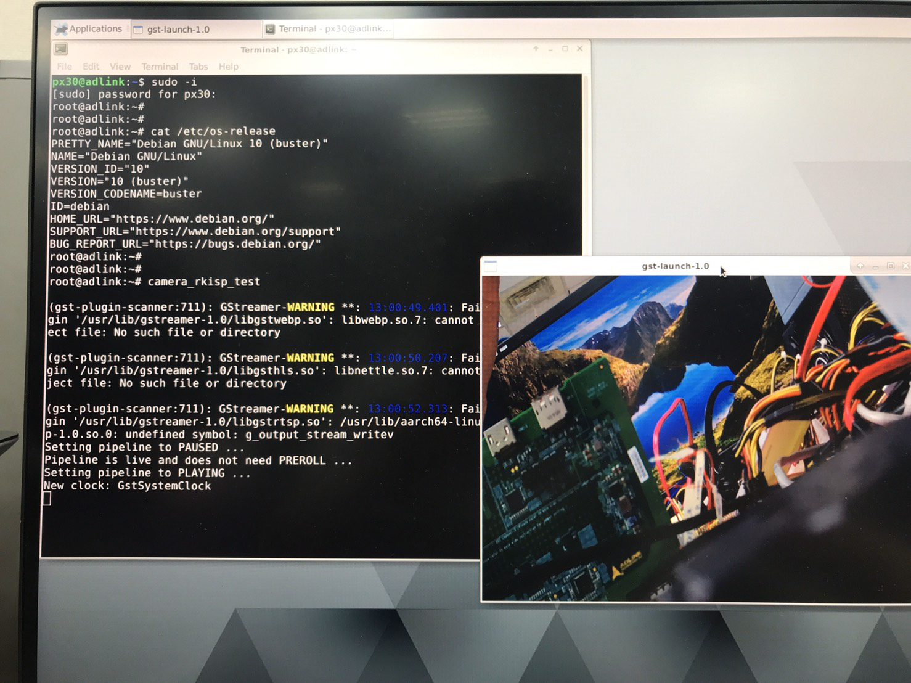

Tutorial 6 - How to enable Raspberry Pi Camera Module It describes how to connect the Raspberry Pi Camera Module V2.1 to I-Pi SMARC PX30 development kit and also teaches how to take pictures, record video, and apply image effects Step 1: I-Pi connectionsWe need other connections on I-Pi to view the display captured from Camera, so refer this link for connections on I-Pi Step 2: Interfacing camera module with I-Pi SMARCNotes: The pins of CSI connector are very delicate, so connect it carefully. Install few other dependencies for our applications under Ubutnu/Debian images. $ sudo apt-get install libqt5gui5 libqt5qml5 libqt5quick5 libqt5webkit5 libqt5qml5 libqt5core5a qml-module-qtquick-controls qml-module-qtquick2 libqt5widgets5 libqt5x11extras5 qml-module-qtquick-dialogs Note: Here is the Debian/Ubuntu images: The download link for the latest Debian binary images which built by ADLINK if you need. The download link for the latest Ubuntu binary images which built by ADLINK if you need. Step 3: Testing the Camera$ Camera_rkisp_test Note: if you do not have root privileges, use sudo before executing the commands  To display the video portion of an MPEG-1 video file alone and outputting to an X display window, use the below command: $ gst-launch-1.0 filesrc location=videofile.mpg ! dvddemux ! mpeg2dec ! xvimagesink To display the video portion of a .vob file (used on DVDs) and outputting to an SDL window, use the below command: $ gst-launch-1.0 filesrc location=flflfj.vob ! dvddemux ! mpeg2dec ! sdlvideosink To play both video and audio portions of an MPEG movie, use the below command: $ gst-launch-1.0 filesrc location=movie.mpg ! dvddemux name=demuxer demuxer. ! queue ! mpeg2dec ! sdlvideosink demuxer. ! queue ! mad ! audioconvert ! audioresample ! osssink To play an AVI movie with an external text subtitle stream, use the below command: $ gst-launch-1.0 filesrc location=movie.mpg ! mpegdemux name=demuxer demuxer. ! queue ! mpeg2dec ! videoconvert ! sdlvideosink demuxer. ! queue ! mad ! audioconvert ! audioresample ! osssink This command shows how to refer to specific pads by name if an element has multiple sink or source pads: $ gst-launch-1.0 textoverlay name=overlay ! videoconvert ! videoscale ! autovideosink filesrc location=movie.avi ! decodebin2 ! videoconvert ! overlay.video_sink filesrc location=movie.srt ! subparse ! overlay.text_sink To play an AVI movie with an external text subtitle stream using playbin, use the the below command: $ gst-launch-1.0 playbin uri=<file:///path/to/movie.avi>suburi=<file:///path/to/movie.srt> Step 4: Network streamingTo stream video using RTP and network elements, use the following commands Use this command to run on the transmitter: $ gst-launch-1.0 v4l2src ! video/x-raw-yuv,width=128,height=96,format='(fourcc)'UYVY ! videoconvert ! ffenc_h263 ! video/x-h263 ! rtph263ppay pt=96 ! udpsink host=192.168.1.1 port=5000 sync=false Use this command to run on the receiver: $ gst-launch-1.0 udpsrc port=5000 ! application/x-rtp, clock-rate=90000,payload=96 ! rtph263pdepay queue-delay=0 ! ffdec_h263 ! xvimagesink Raspberry Pi camera V2.1 Description The Raspberry Pi Camera Modules are official products from the Raspberry Pi Foundation. The original 5-megapixel model was released in 2013, and an 8-megapixel Camera Module v2 was released in 2016. For both iterations, there are visible light and infrared versions. Hardware specification Camera Module v2 Net price $25 Size Around 25 × 24 × 9 mm Weight 3g Resolution 8 Megapixels Video modes 1080p30, 720p60 and 640 × 480p60/90 Linux integration V4L2 driver available C programming API OpenMAX IL and others available Sensor Sony IMX219 Sensor resolution 3280 × 2464 pixels Sensor image area 3.68 x 2.76 mm (4.6 mm diagonal) Pixel size 1.12 µm x 1.12 µm Optical size 1/4” Full-frame SLR lens equivalent NA S/N ratio NA Dynamic range NA Sensitivity NA Dark current NA Well capacity NA Fixed focus NA Focal length 3.04 mm Horizontal field of view 62.2 degrees Vertical field of view 48.8 degrees Focal ratio (F-Stop) 2.0 Hardware features Available Implemented Chief ray angle correction Yes Global and rolling shutter Rolling shutter Automatic exposure control (AEC) No - done by ISP instead Automatic white balance (AWB) No - done by ISP instead Automatic black level calibration (ABLC) No - done by ISP instead Automatic 50/60 Hz luminance detection No - done by ISP instead Frame rate up to 120 fps Max 90fps. Limitations on frame size for the higher frame rates (VGA only for above 47fps) AEC/AGC 16-zone size/position/weight control No - done by ISP instead Mirror and flip Yes Cropping No - done by ISP instead (except 1080p mode) Lens correction No - done by ISP instead Defective pixel cancelling No - done by ISP instead 10-bit RAW RGB data Yes - format conversions available via GPU Support for LED and flash strobe mode LED flash Support for internal and external frame synchronization for frame exposure mode No Support for 2 × 2 binning for better SNR in low light conditions Anything output res below 1296 x 976 will use the 2 x 2 binned mode Support for horizontal and vertical sub-sampling Yes, via binning and skipping On-chip phase lock loop (PLL) Yes Standard Serial Control Camera Bus (SCCB) interface Yes Digital video port (DVP) parallel output interface No MIPI interface (two lanes) Yes 32 bytes of embedded one-time programmable (OTP) memory No Embedded 1.5V regulator for core power Yes Software features Picture formats JPEG (accelerated), JPEG + RAW, GIF, BMP, PNG, YUV420, RGB888 Video formats raw h.264 (accelerated) Effects negative, solarize, posturize, whiteboard, blackboard, sketch, denoise, emboss, oilpaint, hatch, gpen, pastel, water color, film, blur, saturation Exposure modes auto, night, night preview, backlight, spotlight, sports, snow, beach, very long, fixed fps, antishake, fireworks Metering modes average, spot, backlit, matrix Automatic white balance modes off, auto, sun, cloud, shade, tungsten, fluorescent, incandescent, flash, horizon Triggers Keypress, UNIX signal, timeout Extra modes demo, burst/time lapse, circular buffer, video with motion vectors, segmented video, live preview on 3D models